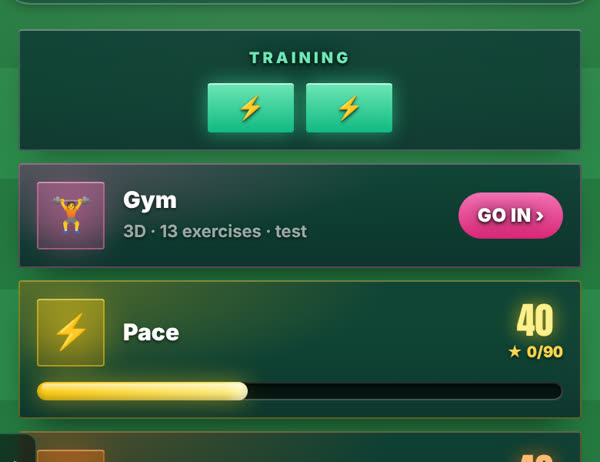
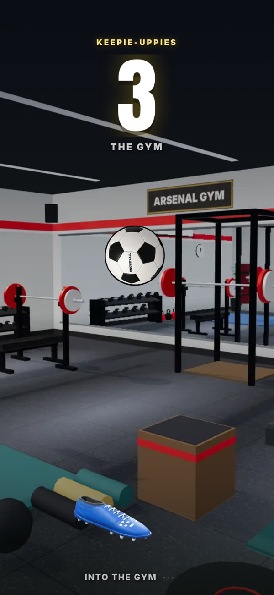
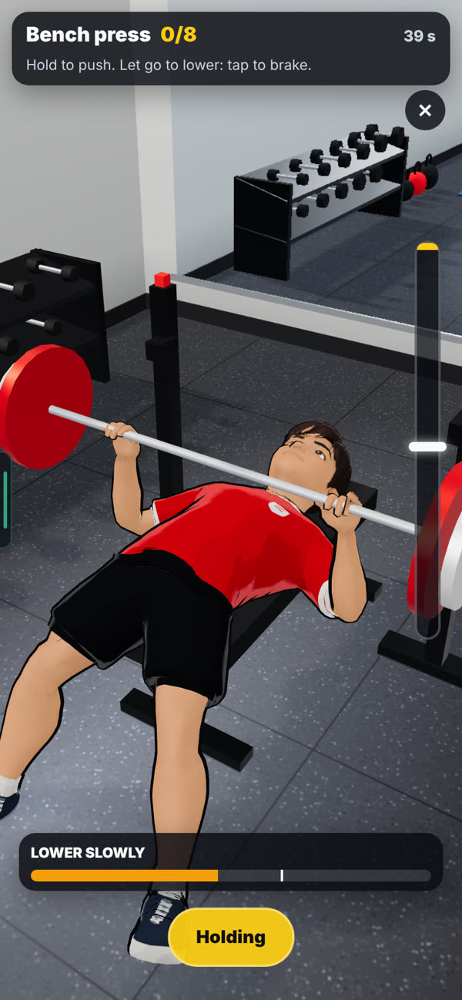
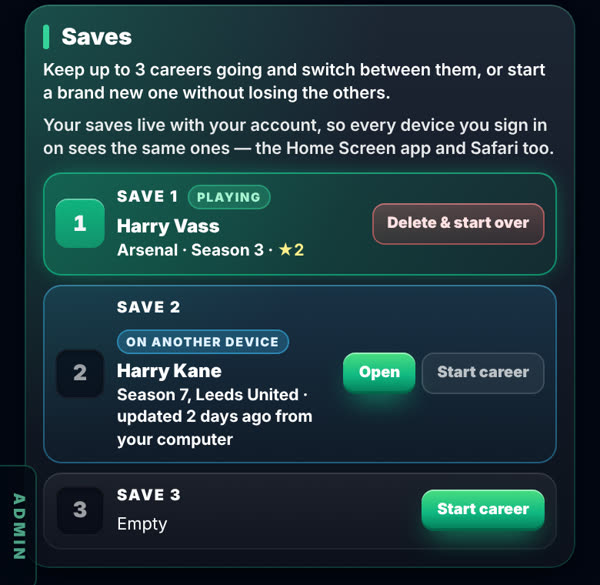
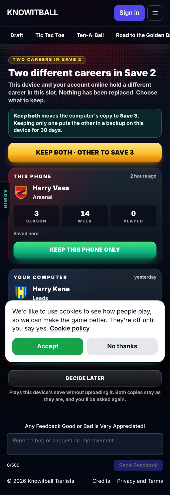
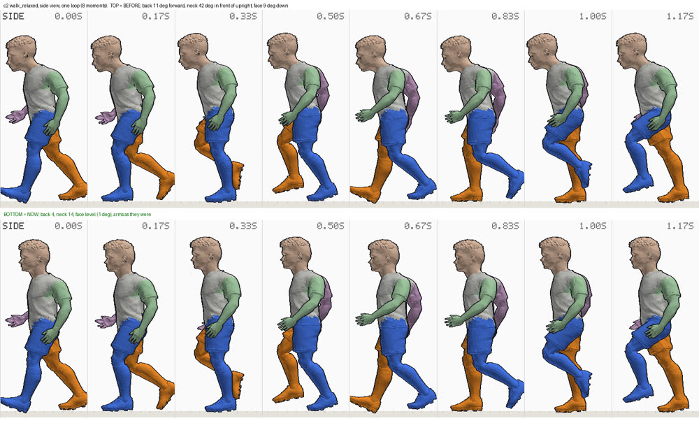

Harry, 28 Nov 2026. Segmented patch notes.
Training tab → the pink Gym card → GO IN. The 3D gym opens in your real career: 13 exercises, your club's kit, a team-mate. ‹ Training takes you back.



Seen in a real career: one bench press saved Strength 20 and one visit. Energy and session bolts did not change.
Gym effects are switched off while we test. The camera looks at the floor until you move. Not tried on a real phone.
The Saves list now reads your account, not just the device. Phone and computer show the same saves. If two careers clash, you choose which to keep.


10 save tests pass. Seen on screen in a test career, signed out with test data.
Not yet seen with your real account on your phone and PC.
Walkers stand upright with the head up and take quicker steps. In group walks and cut scenes, every man keeps at least 70 cm from the man ahead.

Measured: 291 of 361 walk-out frames had two men inside each other; now 0. Steps a second: middle 1.91 → 2.17.
The full 12 s walk-out film is not finished (the machine ran out of memory).